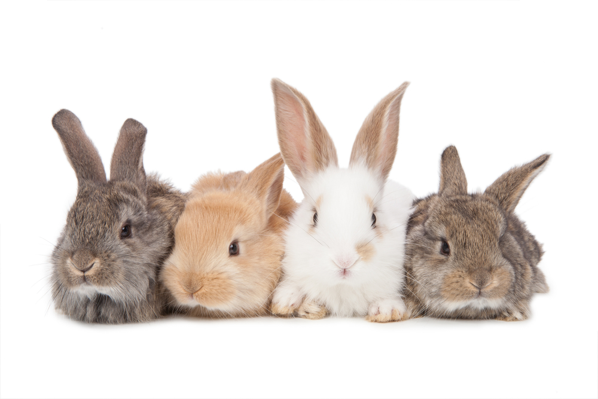

Králík domácí (Oryctolagus cuniculus f. domesticus) je domestikovaná forma evropského králíka divokého. Králíci jsou domácím zvířetem, které lze poměrně snadno chovat v malochovech pro maso. Bílé králičí maso obsahuje v porovnání s ostatními domácími zvířaty nejméně cholesterolu. Zakrslá plemena jsou pak oblíbeným zvířetem chovaným jako společníci, hlavně v městských bytech. Je oblíben převážně u malých dětí. Tito králíci mohou mít uši nahoře nebo dole (tzv. beránci).

Divocí králíci pochází z Pyrenejského poloostrova, kde byli oblíbenou lovnou zvěří už od pravěku. Staří Římané na přelomu letopočtu chovali divoké králíky v oborách, tzv. leporáriích a jejich maso, zejména z mláďat (dokonce i dosud nenarozených), považovali za pochoutku. Římané také králíky vysadili na Baleárských ostrovech, kde se tak přemnožili, že za císaře Augusta musela být k jejich likvidaci nasazena armáda. V raném středověku chovali králíky především mniši v klášterech, neboť maso z dosud neosrstěných mláďat, zvaných laurices, bylo pokládáno za postní pokrm, což potvrdil sám papež Řehoř Veliký. Ve středověku byli králíci zejména ve Francii, Anglii a v oblasti Nizozemí chováni ve stájích pro zábavu, a také proto, aby uklízeli zbytky potravy po koních, hojně se využívaly jejich kožešiny, ale maso nebylo příliš ceněno. Od poloviny 16. století pak známe první králičí plemena, jakou jsou bílí či strakatí králíci, ale také Angorský králík, ke skutečnému rozvoji chovatelství došlo zejména v Anglii. Do 18. století byli králíci chováni hlavně pro kožešinu, poté se však středem pozornosti stala masná produkce. Centrem chovu byla tradičně Francie, oblast dnešní Belgie a Nizozemí, ale také Anglie a Itálie. Do střední Evropy se chov králíků rozšířil až po napoleonských válkách a v českých zemích se chov králíků začal výrazněji rozvíjet až koncem 19. století. Mezi jeho nejznámější průkopníky patřil Jan Václav Kálal. Dnes je uznáváno asi 100 plemen králíků (65 základních, 35 jsou rexové a zakrslá plemena), z nichž většina se chová i v České republice.
V Česku se králík domácí chová v několika typech chovů, v závislosti na účelu jejich chovu. Pro komerční produkci masa slouží velkochovy masných brojlerů, ve velkochovech se rovněž chovají králíci za účelem produkce kožešiny nebo vlny. Králík domácí je významné laboratorní zvíře a pro tento účel se chová v akreditovaných laboratorních chovech. Posledním typem chovu jsou drobnochovy králíků pro maso nebo jako hobby, a individuální chovy zakrslých králíků chovaných ze záliby. Každý typ chovů má svá specifika, králíci jsou chovaní v různých podmínkách a krmeni odlišným způsobem.